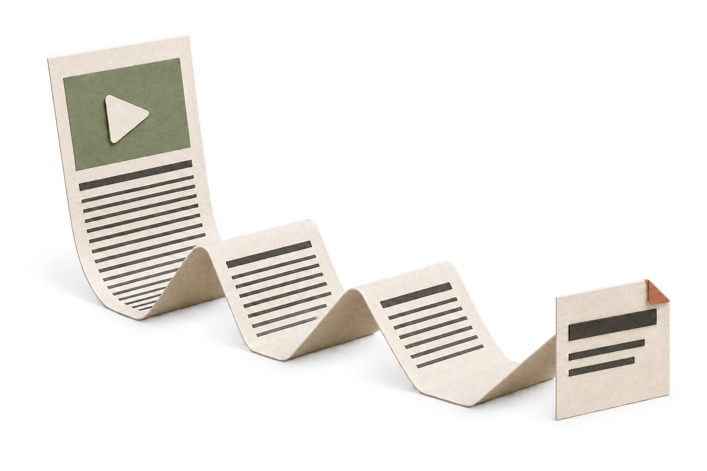
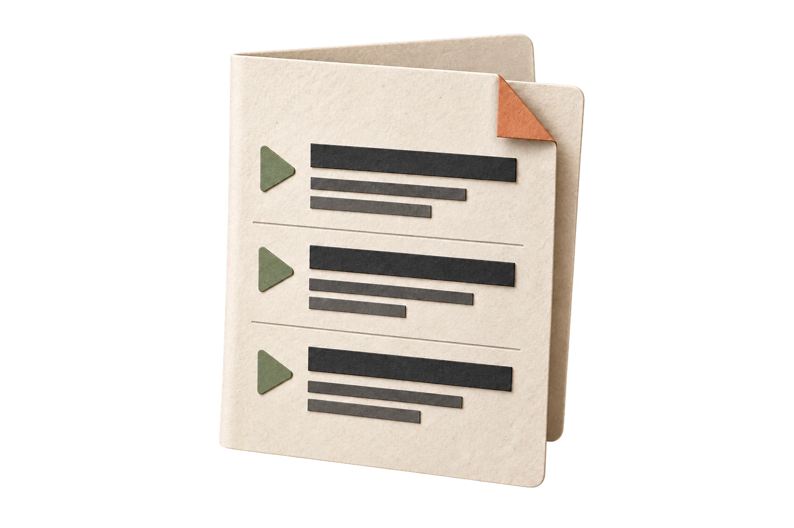
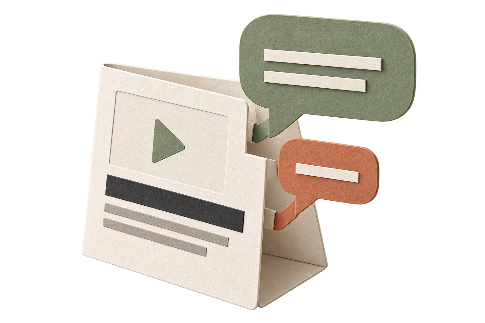

Sift out the noise.
Get the substance of a video without watching every minute.
A calm, text-first YouTube.
Add to ChromeFree to install.

Get the substance of a video without watching every minute.

A calm, text-first feed. You decide what deserves a watch.

Ask questions. Get clarity. Follow your curiosity.